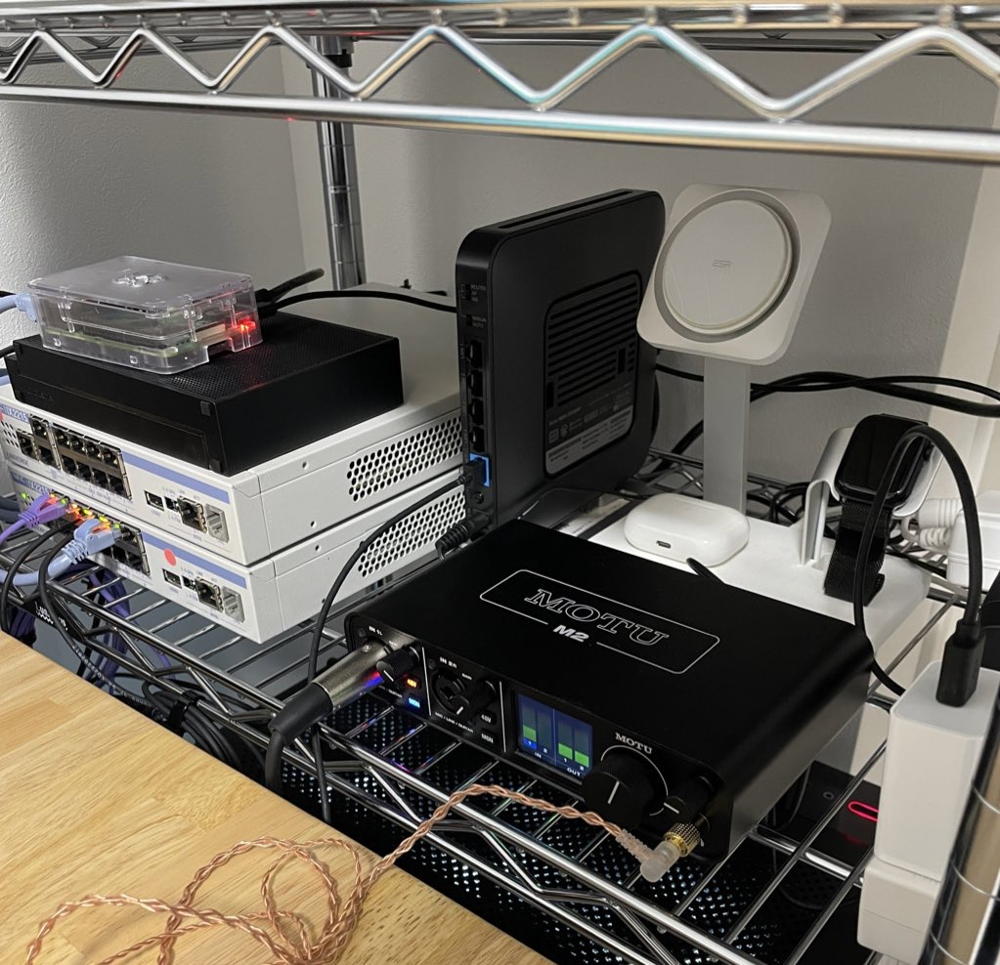

このページでは、少しだけ私自身のこと、特にゲイとしての経験や価値観を紹介したいと思います。
このサイトを作ったきっかけはAWSの勉強のためで、インフラエンジニアを目指しています。ですが、実際にはゲイとして、自分らしさを表現できることに大きな価値を感じています。昔から、ゲーム機などを分解して仕組みを調べることが好きだった私が、大学でTCP/IPや暗号理論を学んだことで、インフラエンジニアとしての道を歩む決意をしました。
…実は就活中によく話していたエピソードとは裏腹に、コードを書くのが嫌で、ネットワークやサーバ構築ならコードを書かずに済むかもと思い、ネットワークセキュリティの研究室に進んだものの、結局はコードから逃れることができませんでした（笑）。そんな私ですが、今はAWSを学んでいることにとても充実感を感じています。
私が目指すのは、LGBTQ+コミュニティにも貢献できるインフラエンジニアとしての道です。技術だけでなく、個性や自分らしさを大切にしながら働いていけるような環境を作りたいと考えています。
最後に、宅内ネットワークと趣味のオーディオ機器についても紹介します。少し偏った趣味かもしれませんが、これも私の一部です。

画像左奥にあるのがNECのIX2215です。NAS、無線AP、デスクトップPCを接続し、静的NATを組んでいます。実は、この機器はゲイとしての「家族や自分自身の絆」を象徴しているのかもしれません。実家とVPNを繋ぎたいと思い買ったのですが、実現するのは少し時間がかかりそうです。
NASはラズパイと外付けHDDを使っているシンプルなものですが、いずれはRAIDも組んで、しっかりしたものにしたいと考えています。個人的には、シンプルで機能的なものが好きです。
手前のオーディオインターフェースはMOTU M2というもので、音楽を聴くときに最高の音質を提供してくれるので、ゲイとしての感性にもぴったりだと思っています。音楽の力で、個性や自分らしさを表現することができるのです。